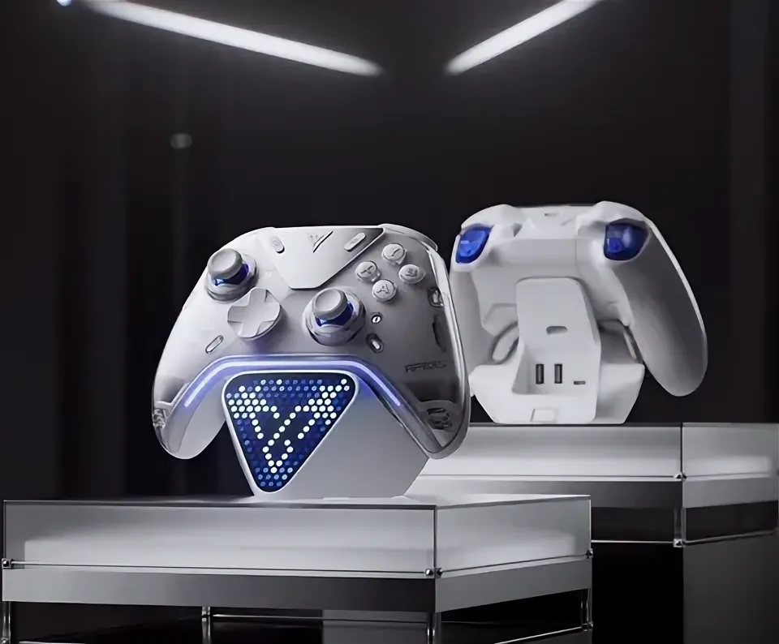

Apex 5
Беспроводной геймпад до 3000 ₽ с USB-C и Bluetooth
Куплен в марте 2026 · Опыт использования: 8 месяцев

Характеристики
✓ Плюсы
- Хорошая цена до 3000 ₽
- Работает в Windows 11 без драйверов (XInput)
- Удобная эргономика
- Приличная автономность (18 часов)
- USB-C зарядка
- Bluetooth 5.0
✗ Минусы
- Нет гироскопа
- Стики без Hall Effect (будет дрифт через год)
- Точность стиков недостаточна для шутеров
- Только для Windows
- Качество пластика среднее
Тесты в играх
Forza Horizon 5
ГонкиВ аркадных гонках геймпад показывает себя отлично. Стики достаточно отзывчивые для управления дрифтом, триггеры удобные. Вибрация работает корректно и не мешает.
Единственная проблема — отсутствие тонкой настройки зон мёртвых стиков в самом геймпаде. Приходится настраивать в игре.
Call of Duty: Warzone
ШутерЗдесь начинаются проблемы. Стики недостаточно точные для прицеливания на средних и дальних дистанциях. В ближнем бою играть можно, но для соревновательного уровня этот геймпад не подходит.
Отсутствие гироскопа — критический минус. В шутерах гироскоп даёт точность, сравнимую с мышью.
Streets of Rage 4
АркадаВ аркадных играх геймпад работает идеально. Крестовина чёткая, кнопки отзывчивые. Для платформеров и beat 'em up это отличный бюджетный вариант.
Альтернативы
Xbox Wireless Controller
5 990 ₽Если нужна точность для шутеров и кроссплатформенность, лучше доплатить за официальный геймпад Microsoft. Работает везде из коробки.
Читать обзор →8BitDo Ultimate
~4 500 ₽Золотая середина по цене с Hall Effect стиками. Нет гироскопа, но стики точнее и не будет дрифта.
Итоговый вердикт
Apex 5 — хороший бюджетный геймпад для аркадных игр и казуальных гонок. Если вы не играете в шутеры и вам не нужен гироскоп, это достойный выбор до 3000 ₽.
Но если вы играете в соревновательные шутеры или хотите геймпад "на годы" — лучше доплатить за Xbox Wireless Controller или 8BitDo Ultimate с Hall Effect стиками.